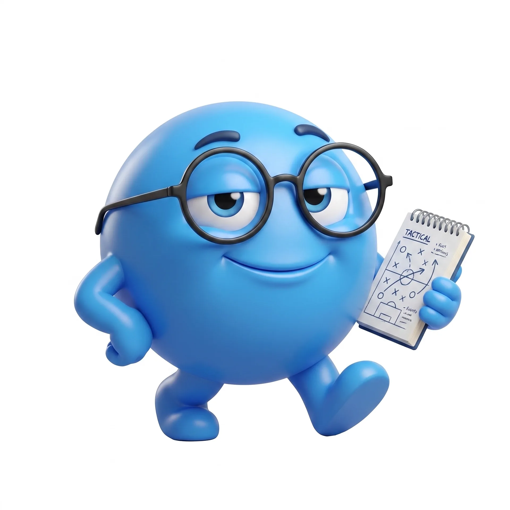
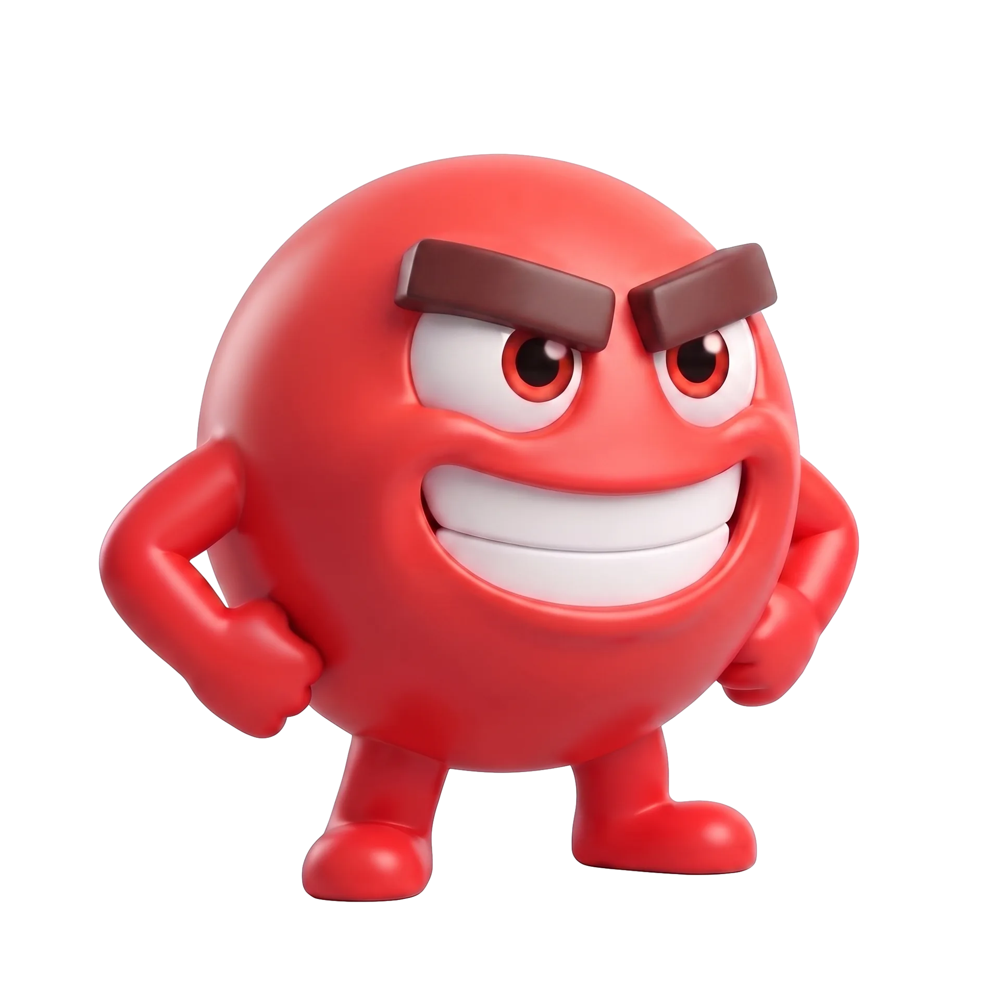
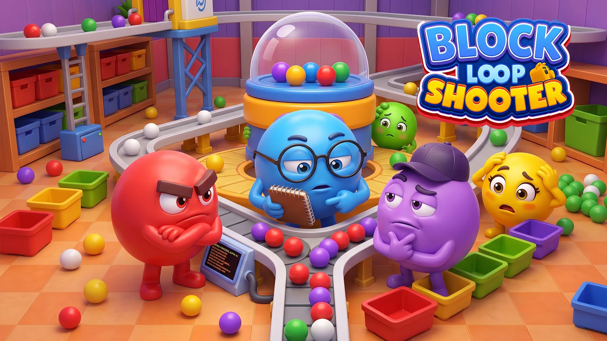
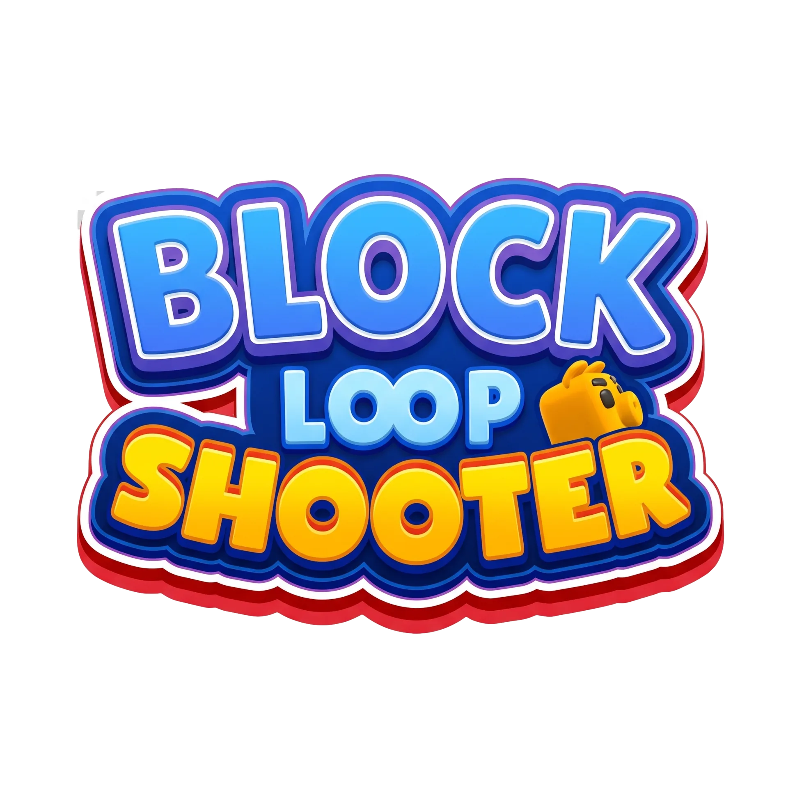
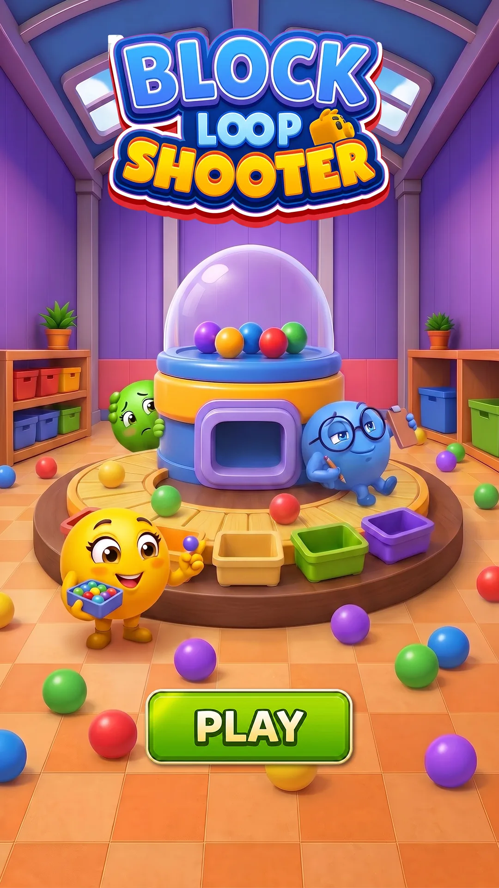

07 / FEATURED CASE STUDY · ANONYMOUS PROJECT
PROJECT
BLOCK.
从既有角色资产出发，完成一套可落地于商店页面的视觉系统：从角色关系、主画面构图与 Logo 处理，到横版商店图与竖版页面的重新适配。
A store visual system built from an existing character set — shaped into a clear, playful and adaptable commercial world.
VISUAL INTEGRATIONCOMPOSITIONICON SELECTIONLOGO TREATMENTMULTI-FORMAT ADAPTATION

01 / IP ASSET SELECTION
让角色成为
一个完整阵容。
原始角色资产由团队角色设计师基于 AI 辅助工作流产出。我负责重新建立角色的视觉层级与关系：以不同色彩、情绪和轮廓制造可读的角色阵容，并将它们统一到同一套商店视觉语境中。


角色资产由团队角色设计师基于 AI 辅助工作流产出；我的负责内容：视觉整合、构图设计、Icon 选择、Logo 处理与商店视觉落地。
02 / KEY VISUAL COMPOSITION
把玩法变成
一眼可读的画面。
以明亮的玩具工坊作为场景基底，将核心装置置于画面中心，角色围绕装置建立视线与动作的节奏。Logo 被处理成明确的识别锚点，让用户在商店浏览时快速理解产品气质与游戏世界。


LOGO AS A RECOGNITION ANCHOR03 / STORE VISUAL DELIVERY
一套视觉语言，
适配不同页面。
在横版主视觉中保留完整的场景与角色关系；在竖版页面中重新组织 Logo、核心装置与 CTA 的阅读顺序。每种尺寸都延续同一识别元素，同时针对页面比例进行独立构图。

PROJECT BLOCK / SUMMARY
从团队已有角色资产，到可用于商店场景的一体化视觉系统。
← BACK TO SELECTED WORK